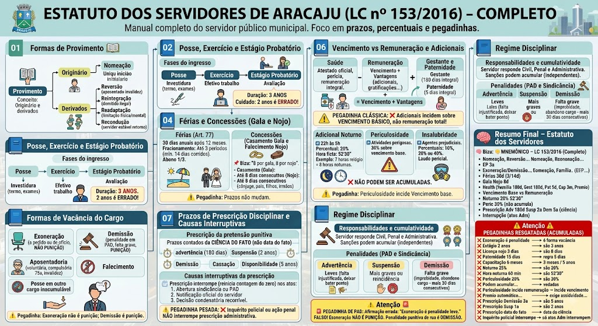

Material de estudo: Estatuto dos Servidores de Aracaju (LC nº 153/2016) - Completo
Material complementar · Ver fonte no GitHub
Formas de Provimento
Originário e derivados
Originário: Nomeação – única forma de ingresso sem vínculo anterior com o Município.
Derivados:
- Reversão: retorno do aposentado por invalidez (quando cessa a doença) ou no interesse da administração;
- Reintegração: retorno do servidor demitido ilegalmente, com ressarcimento de tudo;
- Readaptação: servidor com limitação física/mental é realocado para cargo compatível;
- Recondução: retorno do servidor estável ao cargo anterior por inabilitação em estágio probatório de outro cargo ou reintegração do antigo ocupante.
Posse, Exercício e Estágio Probatório
Fases do ingresso
| Fase | Significado | Detalhe Crucial |
|------|-------------|----------------|
| Posse | Investidura no cargo – assinatura do termo | Exige inspeção médica oficial (exames pré-admissionais) e apresentação de requisitos (idade, escolaridade) |
| Exercício | Efetivo trabalho | A banca costuma inverter: primeiro assina (posse), depois trabalha (exercício) |
| Estágio Probatório | Período de avaliação para adquirir estabilidade | Duração de 3 (três) anos de efetivo exercício. Cuidado: se disser '2 anos' ou '24 meses' (regra antiga) está ERRADO! |
Formas de Vacância do Cargo
Eventos que vagam o cargo público
O cargo público torna-se vago nas seguintes hipóteses:
- Exoneração: a pedido do servidor ou de ofício (ex.: reprovação no estágio probatório, insuficiência de desempenho). NÃO É PUNIÇÃO.
- Demissão: penalidade aplicada em PAD, por falta grave. É PUNIÇÃO.
- Aposentadoria: voluntária, compulsória (aos 75 anos) ou por invalidez.
- Posse em outro cargo inacumulável: quando o servidor toma posse em cargo que não pode acumular (ex.: dois cargos de professor).
- Falecimento: morte do servidor.
⚠️ Pegadinha: A banca pode confundir exoneração com demissão. Exoneração não é punitiva; demissão é punitiva.
Férias e Concessões (Gala e Nojo)
Férias (Art. 77 e segs.)
Direito a 30 (trinta) dias de férias anuais, após 12 meses de exercício (período aquisitivo).
Fracionamento: Podem ser fracionadas em até 3 (três) períodos, sendo um deles de, no mínimo, 14 (catorze) dias corridos.
Abono constitucional: O servidor recebe 1/3 (um terço) a mais do que o salário normal (adicional de férias).
📌 Dica: O fracionamento em 3 períodos e o mínimo de 14 dias é uma pegadinha comum – a banca adora dizer que pode ser fracionado em até 5 períodos ou que o mínimo é de 10 dias.
Concessões – Casamento (Gala) e Falecimento (Nojo)
O servidor tem direito a se ausentar do serviço sem prejuízo da remuneração nas seguintes situações:
- Casamento (Gala): até 8 (oito) dias consecutivos.
- Falecimento (Nojo): até 8 (oito) dias consecutivos para cônjuge, companheiro(a), pais, filhos, irmãos, ou pessoas que vivam sob sua dependência econômica.
- Falecimento de parente não enquadrado: pode ser concedida licença por motivo de força maior, a critério da Administração.
📌 Bizu: '8 por gala, 8 por nojo'.
⚠️ Pegadinha: A banca adora trocar os prazos (ex.: 3 dias, 5 dias, 10 dias). Em Aracaju, são 8 dias para ambos.
Licenças do Servidor
Licença para tratamento de saúde
Concedida ao servidor que apresente atestado médico oficial, com perícia da junta médica municipal.
Características:
- Prazo: conforme necessidade médica, com reavaliação periódica.
- Remuneração: integral, se for doença comprovada.
- Se a doença for incurável ou incapacitante, pode levar à aposentadoria por invalidez.
⚠️ Pegadinha: A banca pode afirmar que o prazo máximo é de 3 meses ou que não exige perícia. FALSO! Exige perícia oficial.
Licença por motivo de doença em pessoa da família
Concedida ao servidor que necessite acompanhar cônjuge, companheiro(a), pais, filhos, irmãos, ou dependentes econômicos, com doença grave comprovada.
Características:
- Prazo: até 180 (cento e oitenta) dias por ano, com remuneração integral nos primeiros 90 dias e parcial nos seguintes (a critério da Administração).
- Exige perícia médica.
⚠️ Pegadinha: A banca pode afirmar que a licença é ilimitada ou sem perícia. FALSO! Tem limite de 180 dias/ano e exige comprovação médica.
Licença à gestante e à paternidade
Licença-maternidade:
- Prazo: 180 (cento e oitenta) dias (conforme a Lei Municipal, em conformidade com a Lei 11.770/2008, que prorroga para 180 dias em empresas públicas e órgãos públicos).
- Remuneração: integral.
Licença-paternidade:
- Prazo: 5 (cinco) dias (art. 7º, XIX, CF) – podendo ser estendido em casos específicos por lei municipal.
- Remuneração: integral.
📌 Dica: A licença-maternidade na administração municipal costuma ser de 180 dias, mas confira o texto da LC 153/2016 – a regra da CF é 120 dias, mas a LC pode estender para 180, como ocorre em Aracaju.
⚠️ Pegadinha: A banca pode afirmar que a licença-paternidade é de 15 dias (regra de alguns estados), mas na LC 153/2016 é de 5 dias (regra geral da CF para municípios que não têm lei específica).
Licença para capacitação (aperfeiçoamento)
Concedida ao servidor estável para realizar cursos de aperfeiçoamento, pós-graduação ou mestrado, relacionados à sua área de atuação.
Características:
- Prazo: até 3 (três) meses a cada 5 (cinco) anos de serviço.
- Remuneração: integral, se o curso for de interesse da Administração.
- Exige aprovação do superior imediato e compatibilidade com o serviço.
⚠️ Pegadinha: A banca pode afirmar que a licença capacitação é de 6 meses ou 1 ano. FALSO! O prazo é de até 3 meses, a cada 5 anos.
Licença-prêmio (assiduidade) – Requisitos e Interrupção
Concedida ao servidor que não tiver faltado injustificadamente por 5 (cinco) anos de efetivo exercício (quinquênio).
Duração: 3 (três) meses (90 dias), que podem ser usufruídos em pecúnia (dinheiro) ou em descanso, a critério da Administração.
Perda do direito à licença-prêmio (interrupção): O servidor perde o direito à licença-prêmio do quinquênio se, durante os 5 anos:
- Sofrer penalidade disciplinar de suspensão;
- Faltar ao serviço injustificadamente por mais de um limite fixado na lei local (geralmente mais de 30 dias interpolados);
- Licenciar-se para tratar de interesses particulares (licença a pedido, sem remuneração).
⚠️ PEGADINHA:
❌ 'A licença-prêmio é automática após 5 anos, independentemente de faltas.' FALSO! Exige assiduidade e não pode ter sofrido suspensão no período.
❌ 'O servidor pode usufruir a licença-prêmio a qualquer momento, sem critério.' FALSO! A Administração pode definir quando e se será em pecúnia ou descanso.
Vencimento vs Remuneração e Adicionais
Vencimento e Remuneração
Vencimento (básico): É o valor fixo do cargo, o padrão base pago ao servidor. É imutável e sobre ele não incidem descontos que não sejam previstos em lei.
Remuneração: É o vencimento acrescido das vantagens pecuniárias (adicionais, gratificações, abonos, etc.).
Fórmula: Remuneração = Vencimento + Vantagens.
⚠️ PEGADINHA CLÁSSICA:
❌ 'O adicional de periculosidade incide sobre a remuneração.'
FALSO! Os adicionais (noturno, periculosidade, insalubridade) incidem sobre o vencimento básico, não sobre a remuneração total.
📌 Exemplo: Se o vencimento é R$ 3.000,00 e o servidor tem adicional de periculosidade (30%), o adicional será R$ 900,00 (sobre os R$ 3.000,00), e não sobre a remuneração com outras vantagens.
Adicional Noturno – Detalhamento Completo
Horário: Serviço prestado entre 22h e 5h.
Percentual: 20% (vinte por cento) sobre o valor da hora normal (art. 73 da CLT, aplicado aos servidores).
Hora ficta (reduzida): A hora noturna é computada como 52 minutos e 30 segundos (52'30'') – a cada 52'30'' trabalhados à noite, computa-se 1 hora inteira de serviço.
Exemplo: Se o servidor trabalha das 22h às 5h (7 horas relógio), computa-se 7 × 60 = 420 minutos; 420 ÷ 52,5 = 8 horas noturnas. Ele recebe como se tivesse trabalhado 8 horas.
⚠️ PEGADINHA:
❌ 'A hora noturna tem 60 minutos.' FALSO! São 52 minutos e 30 segundos.
❌ 'O adicional noturno é de 25%.' FALSO! São 20%.
Periculosidade e Insalubridade – Regras e Vedação
Adicional de Periculosidade:
- Devido ao servidor exposto a atividades perigosas (armas, explosivos, inflamáveis, energia elétrica).
- Percentual: 30% (trinta por cento) sobre o vencimento base.
Adicional de Insalubridade:
- Devido ao servidor exposto a agentes químicos, biológicos ou físicos prejudiciais à saúde.
- Percentuais: 10%, 20% ou 40%, conforme laudo pericial.
Regra de ouro: A periculosidade e a insalubridade NÃO podem ser acumuladas (vedação expressa na legislação), salvo se houver previsão legal específica em contrário (o que é raro).
⚠️ PEGADINHA:
❌ 'O servidor pode acumular adicional de periculosidade e insalubridade.' FALSO! É vedada a acumulação.
❌ 'O adicional de periculosidade incide sobre a remuneração.' FALSO! Incide sobre o vencimento base.
Prazos de Prescrição Disciplinar e Causas Interruptivas
Prescrição da pretensão punitiva
A Administração Municipal tem prazos para instaurar processo disciplinar e aplicar penalidades, contados da data da ciência do fato pela autoridade competente (e não da data do fato em si):
- Advertência: prescreve em 180 (cento e oitenta) dias.
- Suspensão: prescreve em 2 (dois) anos.
- Demissão, Cassação de Aposentadoria ou Disponibilidade: prescreve em 5 (cinco) anos.
Regra: O prazo começa a correr da data em que a Administração tomou conhecimento do fato, não da data do fato em si.
⚠️ PEGADINHA:
❌ 'O prazo para demissão é de 3 anos.' FALSO! São 5 anos.
❌ 'O prazo começa a contar da data do fato.' FALSO! Começa da data da ciência pela autoridade competente.
❌ 'O prazo para suspensão é de 1 ano.' FALSO! São 2 anos.
Causas interruptivas da prescrição
A prescrição se interrompe (reinicia a contagem do zero) nos seguintes atos administrativos:
1. Abertura de sindicância ou Processo Administrativo Disciplinar (PAD) – desde que devidamente instaurado;
2. Notificação oficial do servidor sobre a acusação formal;
3. Decisão condenatória recorrível (quando ainda cabe recurso).
⚠️ PEGADINHA PESADA:
❌ 'O mero inquérito policial ou ação penal interrompe a prescrição administrativa.'
FALSO! A prescrição administrativa só é interrompida por atos administrativos (sindicância, PAD, notificação oficial), nunca por inquérito policial ou ação penal, que são esferas autônomas.
📌 Dica: A interrupção ocorre uma única vez; se houver nova interrupção, o prazo recomeça do zero novamente.
Regime Disciplinar
Responsabilidades e cumulatividade
O servidor responde nas esferas Civil, Penal e Administrativa. As sanções podem acumular-se (independentes entre si). A única exceção que vincula a esfera administrativa é se o juiz criminal absolver afirmando categoricamente que o fato não existiu (negativa do fato) ou que não foi ele o autor (negativa de autoria). Se faltarem provas no processo penal, o PAD pode continuar punindo.
Penalidades (PAD e Sindicância)
- Advertência: verbal ou por escrito, para infrações leves (ex.: falta injustificada, deixar de bater ponto);
- Suspensão: para infrações mais graves ou reincidência; servidor fica sem receber (pode ser convertida em multa);
- Demissão: falta grave (ex.: improbidade administrativa, abandono de cargo – faltar mais de 30 dias consecutivos).
🚨 PEGADINHA DE PAD
Afirmação errada: 'O servidor da Polícia Municipal cometeu infração leve; logo, deve ser aplicada a penalidade de exoneração.' FALSO! Exoneração NÃO É PUNIÇÃO. Exoneração ocorre a pedido do servidor ou em reprovação no estágio probatório. A penalidade punitiva de rua é DEMISSÃO.
Resumo Final – Estatuto dos Servidores
🧠 MNEMÔNICO – LC 153/2016 (Completo)
📌 Provimento: Nomeação (originário) + Reversão, Reintegração, Readaptação, Recondução (derivados).
📌 Fases: Posse → Exercício → Estágio Probatório (3 anos).
📌 Vacância: Exoneração, Demissão, Aposentadoria, Posse inacumulável, Falecimento.
📌 Férias: 30 dias, fracionamento em até 3, mínimo 14, abono 1/3.
📌 Gala e Nojo: 8 dias (casamento e falecimento).
📌 Licenças: Saúde (perícia), Família (180 dias/ano), Gestante (180 dias), Paternidade (5 dias), Capacitação (3 meses/5 anos), Prêmio (3 meses/5 anos, com assiduidade).
📌 Vencimento vs Remuneração: Vencimento = base; Remuneração = base + vantagens. Adicionais incidem sobre o VENCIMENTO!
📌 Adicional Noturno: 20%, hora 52'30''.
📌 Periculosidade: 30% sobre o vencimento – NÃO acumula com insalubridade.
📌 Insalubridade: 10% a 40% – NÃO acumula com periculosidade.
📌 Prescrição: Advertência = 180 dias; Suspensão = 2 anos; Demissão = 5 anos (contados da ciência).
📌 Interrupção: Sindicância, PAD, notificação, decisão recorrível (atos administrativos).
⚠️ PEGADINHAS RESGATADAS (ACUMULADAS)
❌ 'Exoneração é penalidade.' → ERRADO (é forma de vacância, não punição).
❌ 'Estágio probatório: 2 anos.' → ERRADO (são 3 anos).
❌ 'Licença nojo: 3 dias.' → ERRADO (são 8 dias).
❌ 'Licença-paternidade: 15 dias.' → ERRADO (regra geral: 5 dias).
❌ 'Licença capacitação: 6 meses.' → ERRADO (3 meses a cada 5 anos).
❌ 'Adicional noturno: 25%.' → ERRADO (20%).
❌ 'Hora noturna tem 60 minutos.' → ERRADO (52'30'').
❌ 'Adicional de periculosidade: 20%.' → ERRADO (30%).
❌ 'Periculosidade e insalubridade podem ser acumuladas.' → ERRADO (vedadas).
❌ 'Adicional de periculosidade incide sobre a remuneração.' → ERRADO (incide sobre o vencimento).
❌ 'Licença-prêmio é automática a cada 5 anos.' → ERRADO (exige assiduidade e não ter punições).
❌ 'Prescrição para demissão: 3 anos.' → ERRADO (5 anos).
❌ 'Prescrição para suspensão: 1 ano.' → ERRADO (2 anos).
❌ 'Prescrição começa da data do fato.' → ERRADO (começa da data da ciência).
❌ 'Inquérito policial interrompe a prescrição administrativa.' → ERRADO (só atos administrativos interrompem).
Mapa-mental
